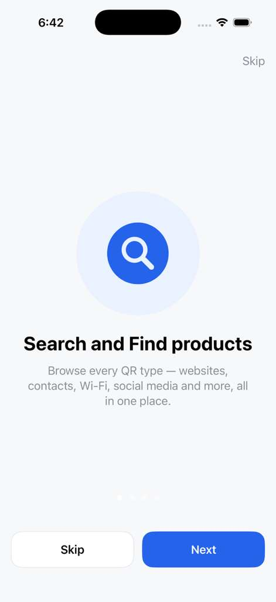
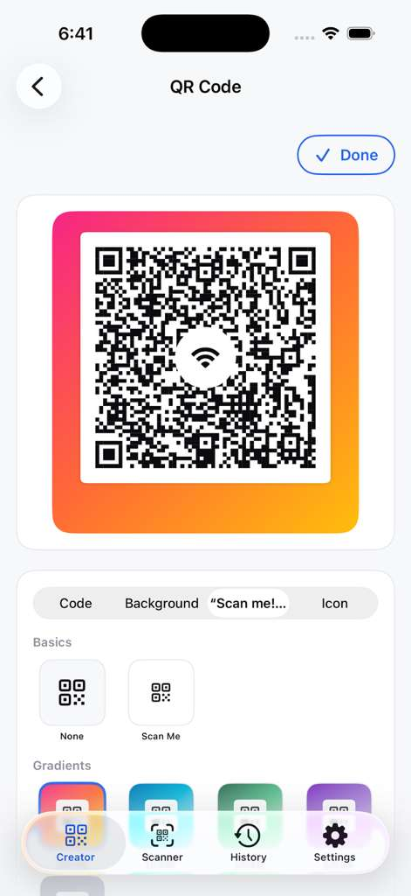
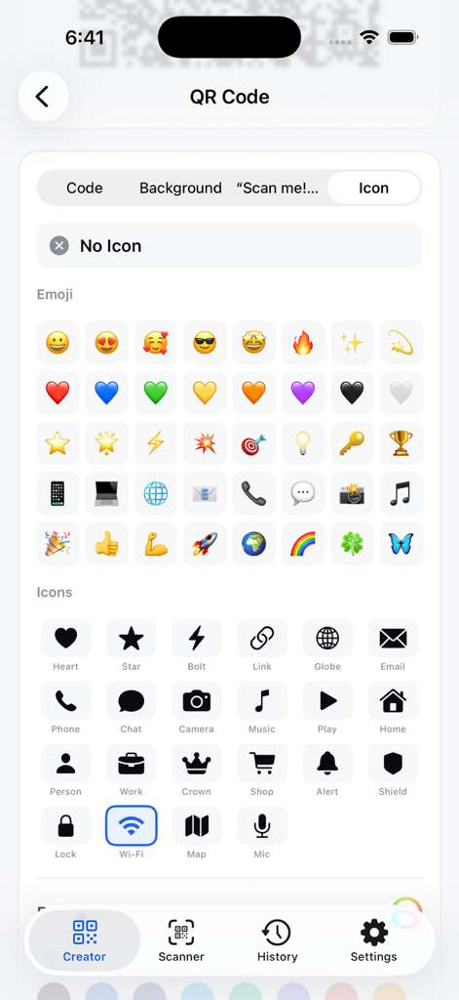
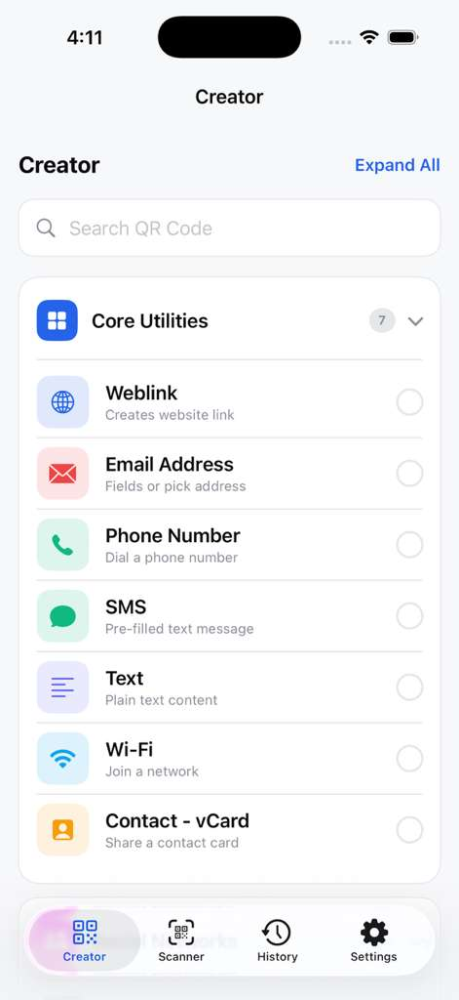
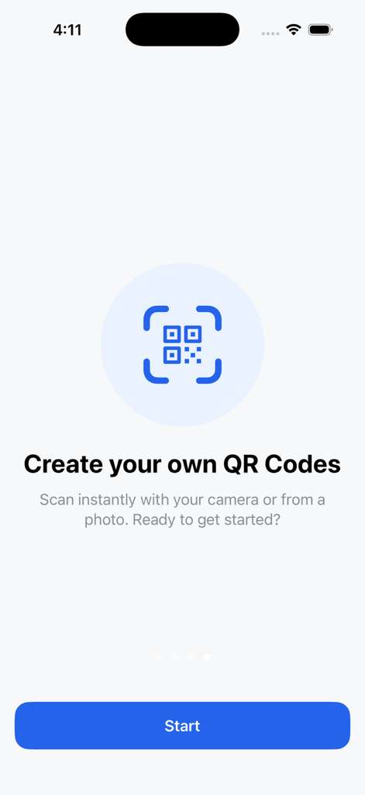
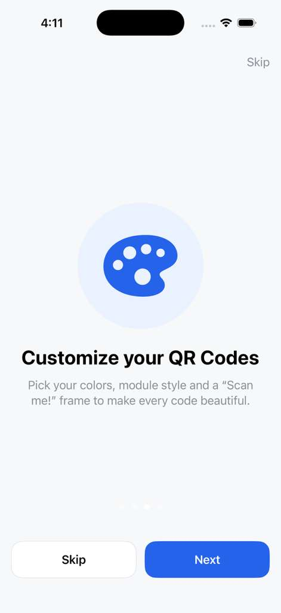
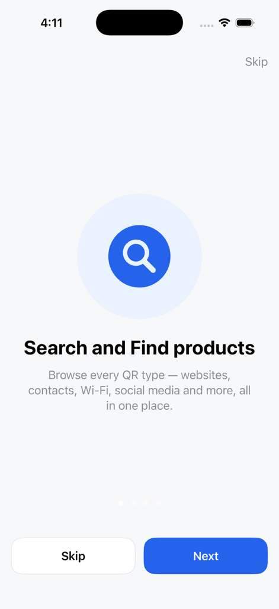
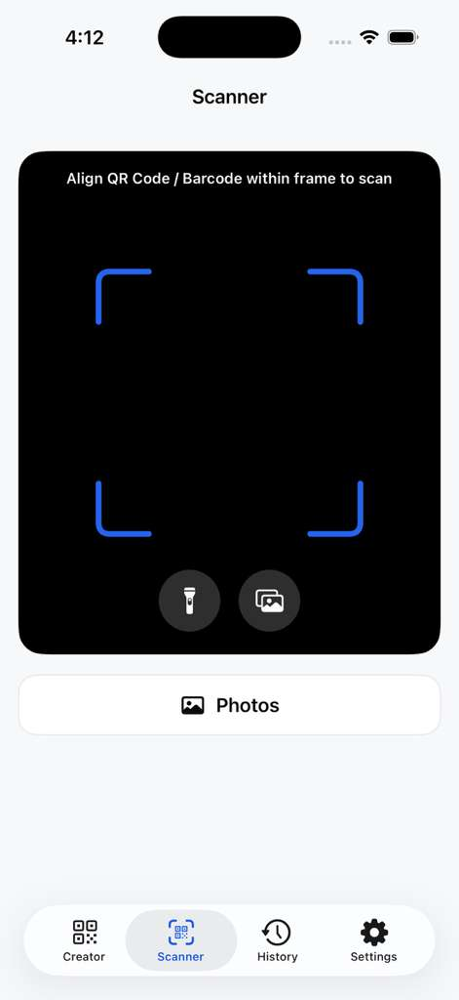

A premium mobile utility application developed for high-speed QR generation and domain scanning operations. It integrates domain security warnings, custom styling presets, and fast local compilation.








QR codes are commonly used to share links, but standard scanners do not parse domain attributes or check the security integrity of destinations before redirecting. System administrators and developers needed a tool that was both fast and security-conscious.
I built QR for Dom to solve this. It provides domain validation, connection logging, offline generation, and multiple layout templates in a single secure environment.